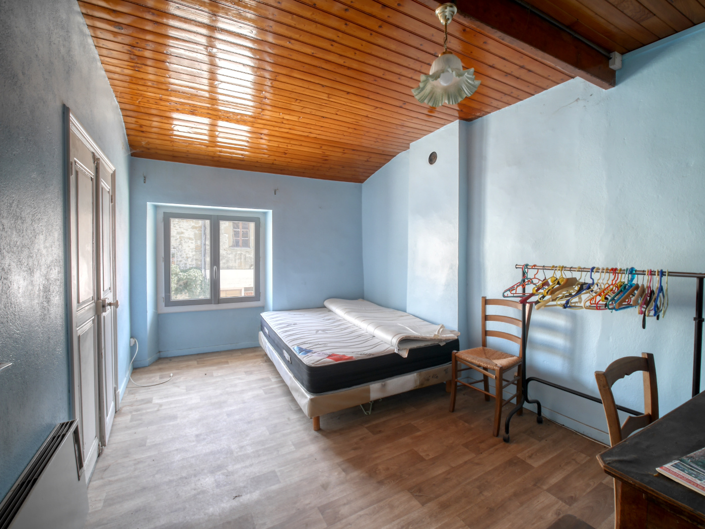
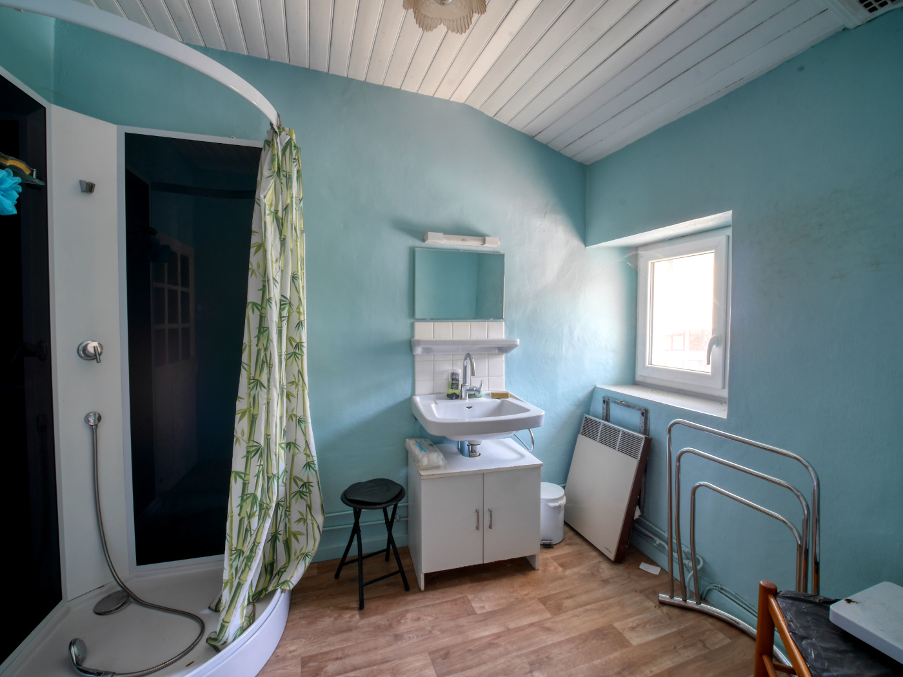
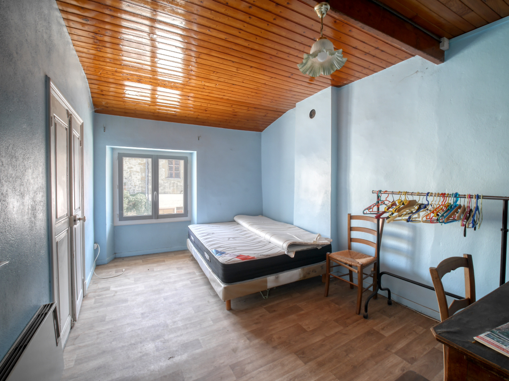
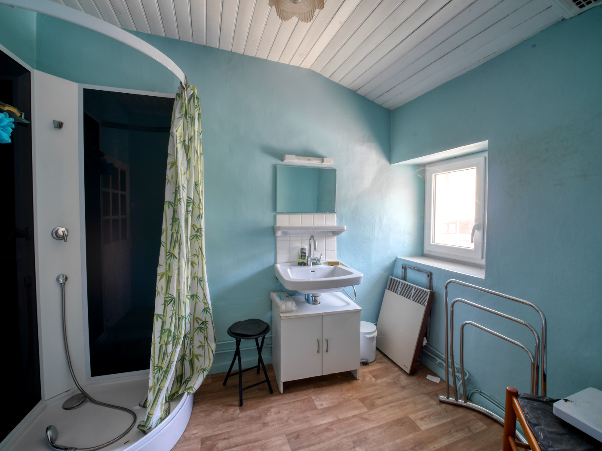
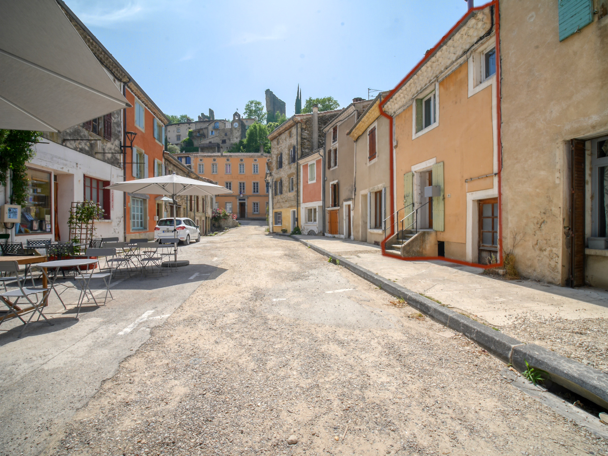
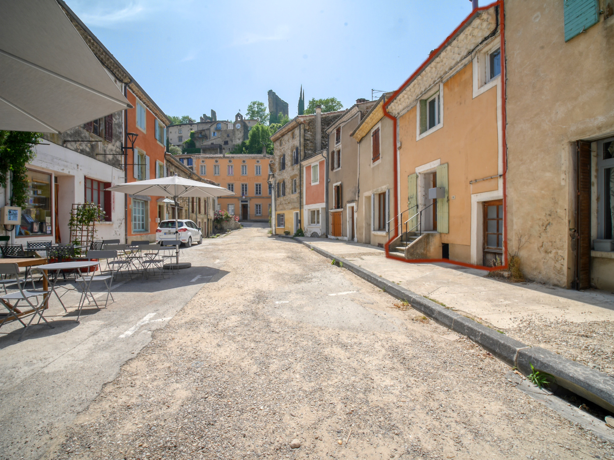
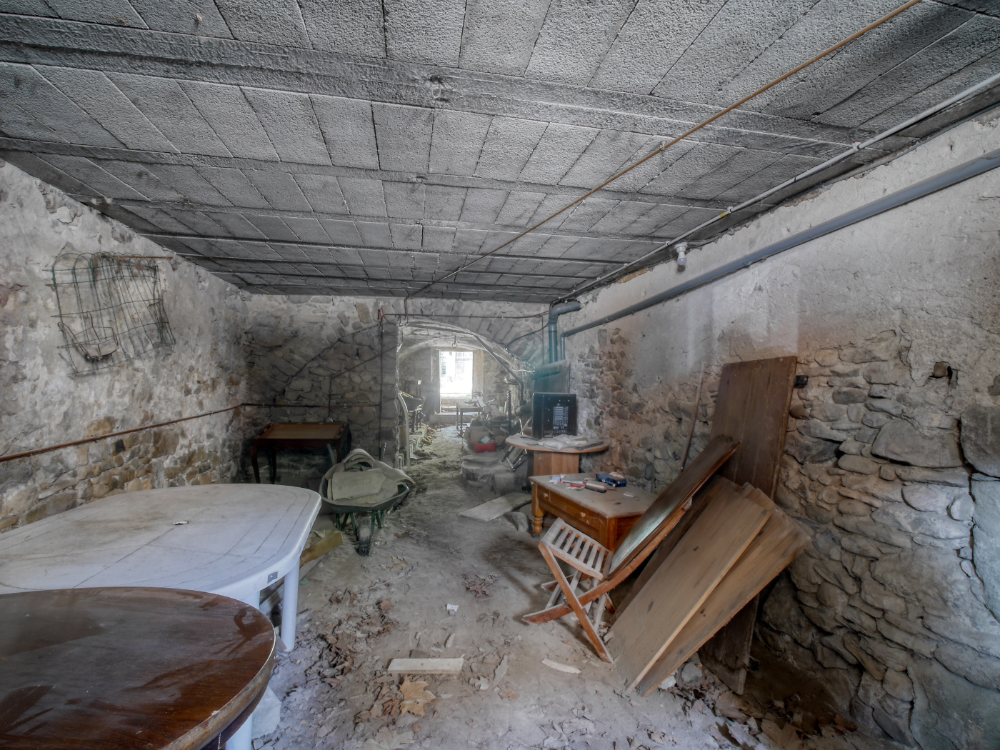
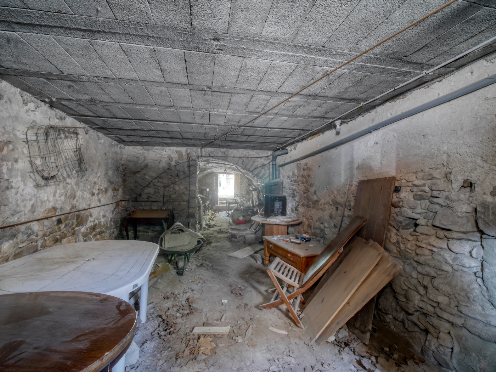

A propos
À Livron, un projet immobilier aux possibilités infinies ! Investisseurs, artisans, amoureux de la rénovation ou porteurs de projets collectifs : cette bâtisse est une occasion unique de donner vie à vos idées.
Un emplacement idéal : A proximité immédiate du centre de Livron, vous profitez de toutes les commodités (écoles, commerces, gare).
Une surface rare : Près de 400 m² exploitables, permettant de créer une grande maison de caractère, plusieurs logements indépendants (jusqu’à 6 habitations) ou encore un projet mêlant habitat et activité professionnelle.
Un terrain généreux : Plus de 1 700 m² plats et arborés avec figuiers, oliviers, bananiers… un cadre verdoyant qui fait déjà tout son charme.
Un potentiel créatif : Les 45 m² d’ateliers présents sur place offrent un espace supplémentaire idéal pour un artisan, un bricoleur ou même des aménagements annexes (studio, rangement, espace de travail).
Pourquoi ce bien est exceptionnel ? Parce qu’il réunit à la fois l’authenticité des vieilles pierres, un terrain vaste, un emplacement stratégique et une modularité quasi illimitée. Que vous soyez dans une logique d’investissement locatif, de revente après rénovation ou de construction d’un lieu de vie familial/partagé, ce corps de ferme coche toutes les cases.
Photos


 




 


 



Vidéo Intérieur
Vidéo Extérieur
Géolocalisation
Cadastre
Vue aérienne

Détails Techniques
- Année de construction : avant 1900
- Année d’achat : 1964
- Matériaux de construction : Pierre
- Isolation :murs /aucune - Plafond / uniquement sur les chambres de la partie habitable (5-10cm)
- Toiture: Charpente traditionnelle
- Assainissement : Tout à l'égout
- Huisseries : Bois simple vitrage
- Superficie habitable : 117 m2
- Superficie exploitable : 398 m2
- Superficie ateliers supplémentaires : 47 m2
- Surface cadastrale : 1 705 m2
- Mode de chauffage : Chaudière fuel par radiateur de 2008 / cuve 3 000 litres
- Taxe foncière : 2 603 €
- Autres informations : Forrage sur la propriété / Cave
- Autres informations : Possibilités de créer plusieurs logements
- Informations urbanistiques : Parcelles placées en zone Uc sur la commune : Zone urbaine équipée correspondant aux quartiers résidentiels de la commune. Elle est destinée principalement à recevoir des constructions à usage d’habitation ainsi que les activités et services nécessaires à la vie sociale.
Diagnostic de Performance Énergétique